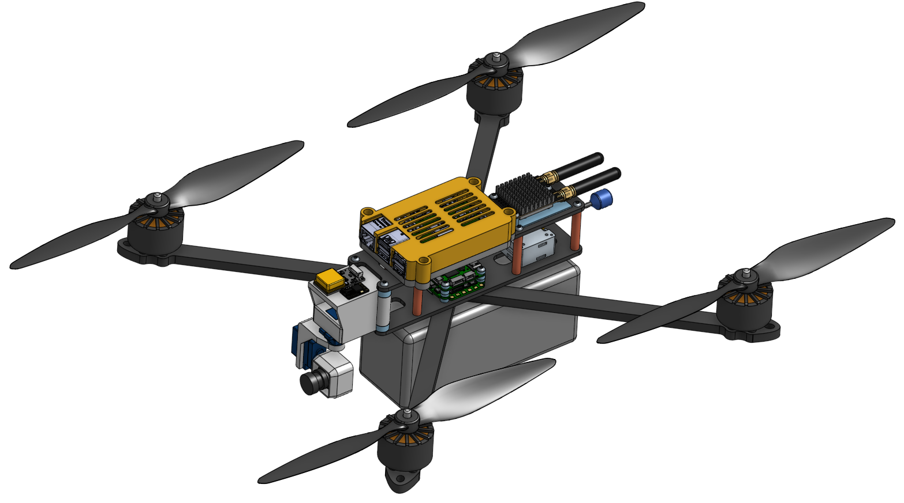
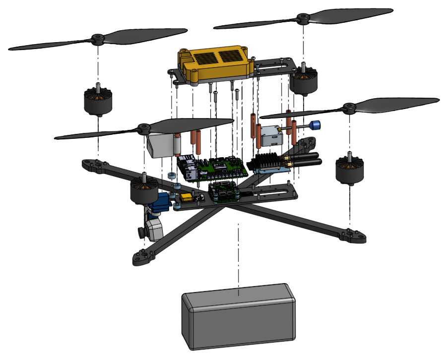
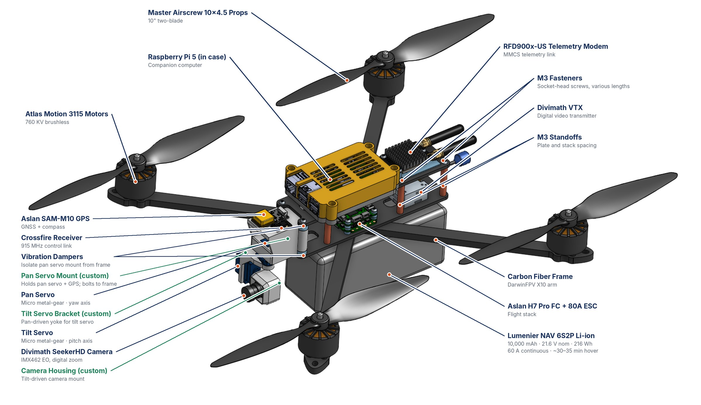
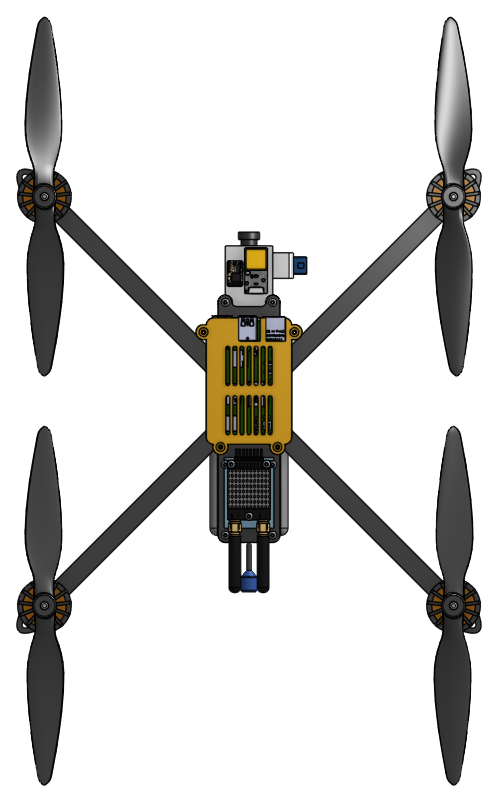
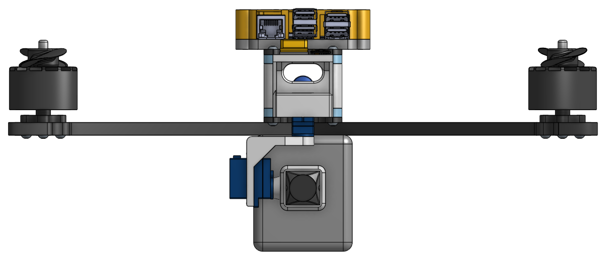
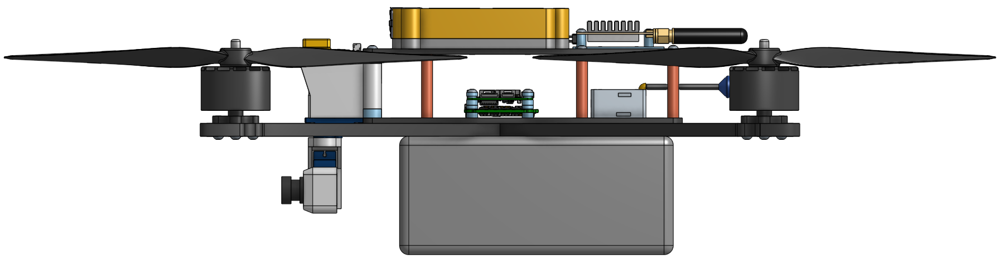
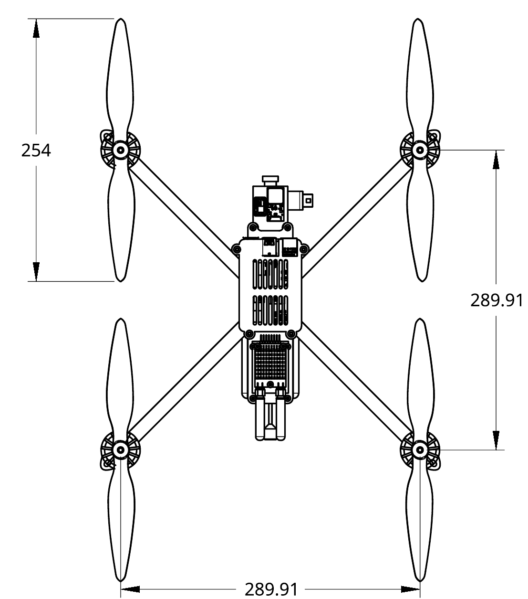
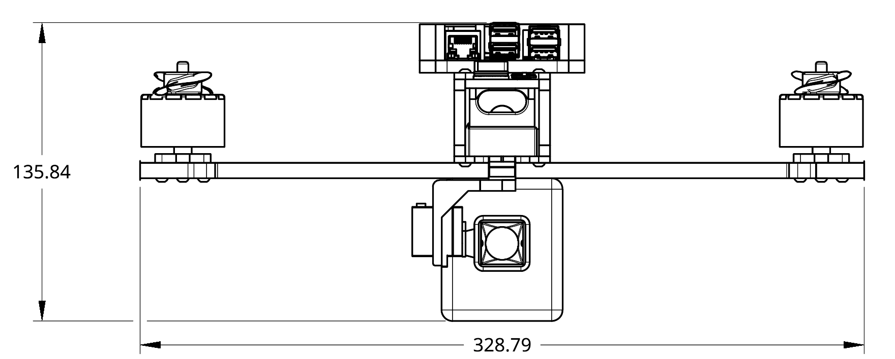
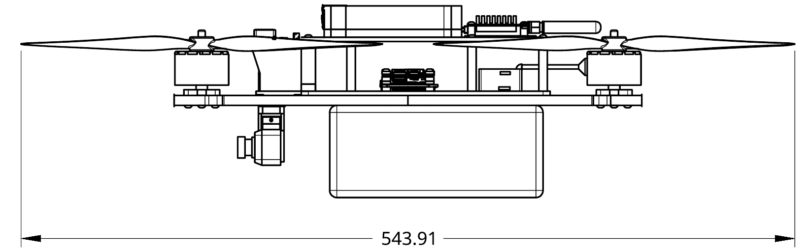

U.S. Army SRR UAV In progress
As project manager of my capstone team, I'm leading the development of a short-range reconnaissance (SRR) quadcopter for a U.S. Army customer. It has to fit in a pack, weigh under 5 lb, fly for 25–30 minutes at up to 5 km, and be built entirely from NDAA-compliant parts, all on a $2,500 budget. This page walks through our first full design, the one we took to our Critical Design Review (CDR), and the trade studies behind every major subsystem: cameras, video links, thermal imaging, propulsion, power, control, and telemetry.
- My role
- Project manager
- Est. weight
- ~4.65 lb
- Hover time
- ~35 min
- Range
- 5 km
- Budget
- $2,493 of $2,500




Explore the model
Drag to rotate, scroll or pinch to zoom, right-click and drag to pan. First-pass CAD for the CDR.
The mission
Small units need a drone they can carry in a pack, launch in minutes, and use to see what's over the next hill or around the next building. Working with our Army point of contact, we turned that need into concrete requirements:
The CDR design
The aircraft is a 10″ folding carbon fiber quadcopter with three independent radio links: one for the pilot's controls, one for telemetry to the Army's ground software, and one for video. A Raspberry Pi 5 sits between the camera and the video transmitter, so it can zoom the image and burn the drone's position and heading into the feed before it reaches the operator.
Component layout


The battery hangs under the frame to keep the center of mass low. The flight stack sits between the plates, and the Pi, video transmitter, and telemetry modem ride on the top plate where their antennas are clear of the carbon. The pan/tilt camera mounts at the very front, so the props stay out of its view when it looks down, with the GPS on top of the pan servo mount, away from the noisy electronics.
Views and drawings






Overall dimensions from the drawings: 543.91 mm prop tip to prop tip, 328.79 mm across the frame, 289.91 mm between motor centers, and 135.84 mm tall from the bottom of the camera housing to the top of the Pi case.






Buying under the NDAA
The hardest constraint on this project isn't weight or range; it's who we're allowed to buy from. Because the drone is for the Army, every component has to comply with the National Defense Authorization Act's restrictions on parts from covered foreign manufacturers, mainly China. Recent NDAA sections (817 and 848) extend this to drone components specifically: flight controllers, radios, data links, cameras, gimbals, and the like. Key components such as the companion computer also have to come from the Defense Contract Management Agency's Blue UAS list.
That rules out most of the hobby drone market, which is where the cheapest, best-documented parts come from. The effects showed up everywhere:
- Prices go up, choices go down. A compliant part often costs several times its commercial equivalent, and many categories have only one or two compliant products. Compliance is usually self-declared by the manufacturer, so for each part we kept a written statement or a reseller listing as evidence.
- Nothing is exempt. Early on, we thought structural parts like the motors and frame might be. Digging into the requirements showed that motors and propellers have to be compliant too, which reshaped the propulsion budget.
- Small accessories can fail. Checking Raspberry Pi's own compliance table showed that the Pi 5 passes, but its AI HAT+ accelerator and active cooler both fail sections 817 and 848. Both came off the parts list.
- Digital video nearly disappeared. DJI, Walksnail, and HDZero, the mainstream digital FPV systems, all have Chinese supply chains. The compliant alternatives are defense radios priced for much larger programs. Divimath, the U.S. company behind HDZero, turned out to be the only digital video option that fit our budget (see Video link).
A recurring distinction was NDAA compliance versus the Blue UAS Framework. Blue UAS listing means the Defense Innovation Unit has reviewed the part; NDAA compliance means only that it avoids covered sources. Several of our parts, including the Aslan flight stack and the SeekerHD camera, are NDAA compliant but not Blue UAS listed, so confirming that NDAA alone was acceptable was one of our first questions for the customer.
Choosing the camera
The camera is the reason the drone exists, so it got the most study. Three questions shaped it: how sensitive the sensor needs to be, which shutter type it uses, and whether the camera outputs analog or digital video.
Low-light sensitivity
Reconnaissance happens at dawn, dusk, and in bad weather, not just midday. Sony's STARVIS sensors (IMX462, IMX662, and others) use back-illuminated pixels that collect far more light than a typical camera sensor, giving usable color video at dusk, at dawn, and under moonlight. They still need some light; in true darkness only a thermal camera works. Low light was the property we couldn't fix later in software, so it became the first filter: every serious candidate used a STARVIS sensor.
Rolling vs. global shutter
A global shutter captures the whole frame at once. A rolling shutter reads the sensor one row at a time, so fast motion or vibration during readout skews vertical lines (during quick pans) or makes the image wobble (“jello”). Global shutter sounds strictly better, but there's a catch: Sony's low-light STARVIS sensors are all rolling shutter, and its global-shutter Pregius sensors are noticeably worse in low light. We had to pick one.
| Rolling shutter (STARVIS) | Global shutter (Pregius) | |
|---|---|---|
| Low light | Excellent | Noticeably worse |
| Fast motion | Skew during quick pans | No distortion |
| Vibration | Jello if poorly isolated | Immune |
| Fix for its weakness | Soft mounting, balanced props, short exposure | None: you can't add light |
We chose rolling shutter. Jello comes mainly from motor and prop vibration, which balanced props and soft camera mounting largely remove, and SRR flying is slow and smooth, so skew rarely matters. Global shutter would have been the better call for fast daytime flying or for visual navigation and mapping from the camera feed, neither of which applies here.
Analog vs. digital camera
Analog FPV cameras output standard-definition composite video straight into an analog transmitter. They're cheap, simple, and there are compliant options, such as the Blue UAS-listed Fat Shark Aura V2 with a STARVIS 2 sensor. Digital cameras capture 1080p, which preserves fine detail and allows digital zoom, but they need a digital link or a computer between camera and transmitter. Finding a camera that was digital, low-light, and NDAA compliant was the hard part:
| Camera | Sensor | Why it lost or won |
|---|---|---|
| Pi Camera Module 2 | Standard | Cheap, but poor in low light; kept only as a software dev camera |
| FRAMOS IMX662 | STARVIS 2, rolling | Strong low light, but about $240 with the Pi adapter |
| FRAMOS IMX900 | Pregius S, global | No jello, but weaker in low light |
| e-con See3CAM_CU27 | IMX462, USB | Couldn't confirm NDAA compliance for the model; removed |
| Fat Shark Aura V2 | STARVIS 2, analog | Blue UAS and cheap, but limited to standard definition |
| Divimath SeekerHD | IMX462 STARVIS, 1080p60 | Chosen: NDAA, low light, digital zoom, $115 |
For a while we had settled on the analog Aura V2 because no compliant digital STARVIS camera seemed to exist. Then we found the SeekerHD: an NDAA-compliant IMX462 camera built to plug into a Raspberry Pi, with software digital zoom of about 3×. Its 148° lens on a standard M12 mount gives a wide view for orientation, and zooming gives the detail to identify a target. It's NDAA compliant but not Blue UAS listed.
Pointing the camera
We chose two small metal-gear servos for pan and tilt instead of a brushless gimbal, on a custom 3D-printed mount with rubber vibration dampers. Tilt matters most: the operator needs to move between looking ahead to fly and scan, and looking straight down to watch a target while holding position. Pan lets the camera watch something off to the side while the drone keeps its heading. Roll does almost nothing on a slow-flying multirotor, and hobby servos are too slow to cancel it anyway. The design ranges are about +15° to −90° of tilt and ±90° of pan. When the heading readout should show where the camera is looking, the camera heading is the vehicle heading plus the pan angle, wrapped to 0–360°, and multiplied by 6400/360 for NATO mils.
Video link: analog vs. digital
The video transmitter (VTX) is a radio, so it falls squarely under the NDAA's covered components. That narrowed the field fast.
| Analog VTX | Digital VTX | |
|---|---|---|
| Picture | Standard definition, about 480 lines | 720p60 or 1080p30 |
| Latency | Lowest | About 1 ms added by the Divimath link |
| At edge of range | Gets snowy but stays usable | Can freeze or drop out |
| On-screen text | Blurry | Crisp MGRS and heading |
| Security | Anyone with a receiver can watch | Can be encrypted |
| Receivers | Any analog goggle or monitor | Tied to one maker's ecosystem |
| Compliant cost | About $70 (Fat Shark Aura) | $300 (Divimath) to thousands |
Why Divimath was the only realistic digital option
DJI, Walksnail, and HDZero, the usual digital FPV systems, were out immediately because of their Chinese supply chains. These are the compliant video links I compared:
| Video link | Type | Cost | Result |
|---|---|---|---|
| Fat Shark Aura | Analog, 1 W, Blue UAS | ~$70 | Baseline for a while; cheap but standard definition |
| Divimath Long Range VTX | Digital, up to 1 W | ~$200 | Only accepts Divimath's own MIPI cameras, so it can't take video from the Pi |
| Divimath HDMI VTX | Digital, 25–900 mW | $300 | Chosen: takes HDMI from any source, including the Pi |
| Microhard pMDDL2450 | IP data link | ~$650 air side | Needs a separate encoder; broke the budget |
| ModalAI MVX | Digital, encrypted, Blue UAS | $1,500 ground receiver | Requires ModalAI's VOXL flight computer: a full re-architecture |
The Divimath HDMI VTX is NDAA compliant, made in Thailand, and transmits on 5.8 GHz with about 1 ms of added latency at 720p60 or 1080p30. Being able to accept video from the Pi is what made it work: everything else in our pipeline depends on the Pi sitting between camera and transmitter.
Encryption as a bonus
Encrypted video wasn't a customer requirement, but it's a real operational security benefit: an unencrypted feed shows anyone with a cheap receiver exactly what the drone is looking at, and where. Divimath's NDAA product line encrypts its digital link with AES-256 at the physical layer, with no added latency, and only a Divimath receiver with the right password can decode it. It's exclusive to the NDAA line, so a hobby HDZero receiver can't watch it either. One caveat we flagged for the customer: U.S. amateur radio rules, which high-power 5.8 GHz video often operates under, prohibit encryption. Using encryption depends on the spectrum authorization the Army operates under.
After dropping the AI HAT+ freed up budget, we went digital: the operator gets a 1080p picture, crisp coordinates, and the option of encryption. The trade-off we accepted is a single-vendor ground ecosystem and an unproven 5 km range, which we plan to test early with a directional antenna on the ground.
Ground receiver: monitor or GroundLink
The base design receives video on Divimath's ground monitor, a self-contained screen. Divimath also makes the GroundLink UVC VRX, a ground receiver with no screen of its own. Its USB-C port appears as a standard webcam on computers, phones, and tablets, with no drivers, and Divimath states it works with ATAK, as well as Mission Planner and QGroundControl. That makes it an avenue we want to explore for putting the drone's live video directly into the systems soldiers already use. The parts list stays with the monitor for now.
| Divimath monitor (baseline) | Divimath GroundLink UVC VRX (option) | |
|---|---|---|
| Price | ~$350 | $599 |
| Display | Built-in screen | None; feeds another device |
| Outputs | HDMI | USB-C webcam (720p, uncompressed) and mini-HDMI |
| Antennas | Shared digital/analog | Four, for diversity reception |
| Encryption | Divimath NDAA receiver; to confirm | Listed as supported |
| Weight and power | Separate 4S battery | 190 g; 7–25 V input, about 10 W |
| Integration | Stand-alone viewing only | Works with ATAK per Divimath; MMCS to be determined |
ATAK compatibility is a good sign. MMCS is still to be determined, but because the GroundLink appears as an ordinary webcam with no drivers, any computer that allows USB cameras should at least see it. What we still need to find out:
- Whether fielded ATAK devices and MMCS computers allow a USB video device under their security settings, and whether an Android device needs USB-OTG camera support for it.
- How ATAK displays it: as the drone's video in UAS Tool, or only in a separate video viewer.
- Whether 720p over USB is enough detail compared with the 1080p link.
The receiver alone isn't the whole ground station. Divimath's page lists the receiver itself but doesn't say what's in the box, so we'd plan for:
| Item | Why it's needed |
|---|---|
| 5.8 GHz antennas (up to four, SMA) | Four-antenna diversity; an omni plus a directional patch, as planned for the monitor, would cover 5 km |
| 7–25 V power | About 10 W through a 5.5 × 2.1 mm barrel jack: a small LiPo with a barrel lead, or vehicle power |
| USB-C cable | USB-C to USB-C for an Android device, or USB-C to USB-A for a vehicle computer |
| Tripod or mast | Built-in 1/4-20 tripod mounts; height helps range |
If it does work, it would be a big step for integration: live, encrypted video on the same screens and maps soldiers already use, without new software. It costs more than the monitor, but the $2,500 budget is a rough target, so cost alone doesn't rule it out. Before it could replace the monitor, we need more research into the existing military systems: what hardware and software MMCS computers and ATAK devices actually run, and what they allow to be plugged in. Availability is a wildcard for both receivers: the monitor and the GroundLink were both sold out when we checked, and we don't know how long that will last.
How the video feed works
- Capture: the SeekerHD streams 1080p video over a 22-pin ribbon cable into the Pi 5's camera port.
- Process: the Pi crops and scales the frame for digital zoom, set by a slider on the pilot's radio.
- Overlay: the Pi reads position, altitude, and heading from the flight controller over a MAVLink serial connection, converts position to MGRS, and draws MGRS, lat/long, and heading in degrees and mils onto each frame.
- Transmit: the Pi outputs HDMI from its micro-HDMI port to the Divimath VTX, which sends it on 5.8 GHz.
- Display: a Divimath monitor at the ground station receives and decrypts the feed.
Putting the Pi in the chain costs about 50–150 ms of latency and 20–30 seconds of boot time before video appears. Both are fine for reconnaissance and waypoint flying, where nobody is hand-flying fast on the feed. In exchange, the overlay is entirely our own software, independent of the flight controller's on-screen display, and the Pi can do things the transmitter alone can't.
Image processing without the AI HAT
The original plan ran person and vehicle detection on the Pi with Raspberry Pi's 13 TOPS AI HAT+ accelerator, and let the operator toggle detection boxes on and off over full-frame-rate video. When the AI HAT+ failed NDAA 817 and 848, we removed it, saving $70 and about 50 g. The base build now does no onboard detection. The Pi 5's own processor can still run lighter image processing, such as contrast enhancement, motion highlighting, or a small detection model at a low frame rate. That leaves a software-only path back to onboard computer vision if a compliant accelerator appears or the customer wants it.
Built for a second camera
Because every image goes through the Pi, adding a second sensor is mostly a software change. A USB thermal camera plugs into one of the Pi's USB ports, and the operator switches between feeds from a switch on the radio. Since the link is 1080p, the Pi can also show thermal as a picture-in-picture inset or blend heat outlines onto the daylight image, which standard-definition analog would make too small to use. That design choice is what makes thermal a clean add-on instead of a redesign.
Thermal imaging
Thermal and low-light EO cameras solve different problems. Thermal is the best tool for finding things: a warm person or engine stands out against a cool background in total darkness, through light smoke, and through foliage that hides them from a normal camera. Low-light EO is the best tool for identifying them, with color and detail that thermal lacks. For an SRR drone, the ideal workflow is thermal cueing: thermal shows the operator where to look, then they switch to the EO camera and zoom in.
The infrared bands
| Band | Wavelength | What it sees | Fit for this drone |
|---|---|---|---|
| SWIR | ~0.9–1.7 µm | Reflected light, like a visible camera; cuts through haze and distinguishes materials; still needs some illumination | Expensive InGaAs sensors; doesn't detect body heat |
| MWIR | ~3–5 µm | Emitted heat; best for very long range and hot targets | Needs a cryogenically cooled detector: too heavy, power-hungry, and costly |
| LWIR | ~8–14 µm | Emitted heat near room temperature, which is where people and vehicles glow brightest | Best fit: small, light, uncooled microbolometers |
For a 5 lb drone looking for people and vehicles at short range, uncooled LWIR is the clear choice. It's what every small-drone thermal camera we considered uses.
Why thermal became an add-on
Resolution decides whether thermal is useful. At 100 m altitude, a 160×120 FLIR Lepton with its 57° lens covers about 0.62 m per pixel, so a person is a single warm dot. A 320×256 FLIR Boson with a 34° lens covers about 0.19 m per pixel, so a person is roughly 3×9 pixels: enough to tell a person from a deer or a sun-warmed rock.
We could squeeze a Lepton into the base budget, but only by giving up money the EO camera needed, for a sensor that only says “something warm is there.” A thermal camera worth having costs more than the rest of the aircraft. So rather than compromise both sensors, we spent the budget on a good EO camera and are proposing good-resolution thermal to the customer as a separately funded add-on. The platform is already built for it: a USB slot on the Pi, room on the mount, and spare weight margin.
Candidate thermal add-ons
| Sensor | Resolution | Approx. price | Notes |
|---|---|---|---|
| FLIR Lepton 3.5 | 160×120 | ~$230 + USB board | NDAA; cheapest day-one thermal, but detection only |
| Seek 320×240 cores | 320×240 | ~$500 | USB; NDAA status unconfirmed, needs a vendor answer |
| FLIR Boson 320 | 320×256 | ~$1,780 with USB kit | Recommended: NDAA, plugs into the Pi like a webcam |
| FLIR Boson 640 | 640×512 | From ~$3,450 | NDAA; full-resolution option that benefits most from the digital link |
| FLIR Hadron 640R | 640×512 + 64 MP EO | ~$4,000 | NDAA, 56 g dual thermal/visible module; MIPI interface, so it would need driver work on the Pi |
| RPX EmbIR-3 | — | Quote pending | Blue UAS listed |
Teledyne FLIR now states that its whole OEM thermal line (Lepton, Boson, Hadron, Neutrino) is NDAA compliant and assembled in California, which made it the default vendor. One paperwork note for the customer: the 60 Hz Boson is export controlled at a higher level than the 9 Hz version, so any non-U.S.-person team members need to be cleared before it's purchased.
Flight stack and compute
Flight controller and ESC
The flight controller runs ArduPilot, which handles waypoints, position hold, return-to-home, and MAVLink telemetry on its own, independent of the companion computer. I compared three compliant stacks:
| ARK FPV + ARK 4-in-1 | Lumenier LUX F765 + ESC | Aslan H7 Pro + 80 A PRO | |
|---|---|---|---|
| Price | $413.49 | ~$224 less than ARK | $189.84 bundle |
| Made in | USA | Thailand | Virginia, USA |
| Processor | H7 | F7 | STM32H743, dual IMUs, barometer |
| ESC rating | 50 A continuous per motor | — | 80 A per motor |
| 12 V output for the VTX | Yes | No | Yes, 3 A (plus 5 V and 3.3 V) |
| Track record | Documented in ArduPilot and PX4 | Established | Brand new; ArduPilot target to confirm |
Aslan saved about $229 against ARK once the GPS was included and kept the 12 V regulator the Lumenier option lacked. The risk is maturity: the board had only just started shipping, so confirming an ArduPilot build is our first action item. Aslan is also registered as a government contractor, which helps for an Army program.
Companion computer
The companion computer had to come from the DCMA Blue UAS list. When onboard detection was still a requirement, I compared the Pi 5 against NVIDIA's Jetson boards:
| Raspberry Pi 5 | Jetson Orin Nano | Jetson Xavier NX | |
|---|---|---|---|
| AI performance | CPU only (AI HAT+ dropped) | Up to 40 TOPS GPU | 21 TOPS GPU |
| Small-model detection | ~11 fps at 640 px | ~40–60 fps | Between the two |
| Power | ~5–12 W | ~7–25 W | ~10–20 W |
| Compliant cost | ~$70–110 | From ~$1,232 (NDAA bundle incl. FC) | Likely $600+ with carrier |
| Video out | Micro-HDMI, straight to the VTX | Mini DisplayPort, needs an adapter | Depends on carrier |
A Jetson would make detection far better, especially on small targets at altitude, but it costs most of the budget, adds weight and 10–15 W, and would duplicate the flight controller. The Pi 5 meets the requirements; a Jetson is the identified upgrade if the customer funds onboard AI separately. We also chose the 4 GB Pi over the 8 GB, since the extra memory adds cost without changing performance for this workload.
Propulsion sizing
Thrust required
I sized the propulsion for a conservative all-up weight of 5 lb (2.27 kg, or 22.2 N). Each of the four motors has to lift about 5.56 N, or 567 g, to hover. Using momentum theory, the ideal power to hover is T3/2 / √(2ρA), about 37 W per motor for a 10″ disk. With typical thrust and power coefficients for a 10×4.5 prop (CT ≈ 0.11, CP ≈ 0.045), the prop actually needs about 6,000 rpm and 58 W of shaft power, a figure of merit of about 0.65.
Motor options
Requiring NDAA-compliant motors cut the field to a handful of U.S. suppliers. These are the motors I worked through:
| Motor | Compliance | Notes |
|---|---|---|
| Unusual Machines UM2807 1300 KV | NDAA | Early pick at about $200 for four; sized for a lighter build with smaller props |
| Vertiq 40-06 G2, 370 KV | U.S.-made; letter needed | Best for endurance on ~13″ props, but integrated ESCs would replace the whole ESC plan; quote only |
| KDE Direct | Mixed U.S./overseas production | Good endurance motors, but compliance varies by part number |
| Unusual Machines 3115 900 KV | NDAA | Proven on compliant 10″ builds and ordered by the Army; no public price |
| GEPRC / iFlight 3115 900 KV | Not compliant | The standard hobby pairing for 10″ on 6S; useful as a performance reference only |
| Atlas Motion 3115, 850 or 950 KV | NDAA | Found and selected at 850 KV first |
| Atlas Motion 3115, 760 KV | NDAA | Final: lower KV for a more efficient hover (below) |
Prop size
We wanted props smaller than 10″ to keep the drone compact. At a fixed weight, ideal hover power scales with thrust to the 3/2 power divided by prop diameter, so smaller props need more power to hold the same weight up. Using our early 30-minute estimate as the baseline:
| Prop | Extra hover power | Est. flight time |
|---|---|---|
| 10″ | Baseline | ~30 min |
| 9″ | ~+11% | ~27 min |
| 8″ | ~+25% | ~24 min |
| 7″ | ~+43% | ~21 min |
Below 9″ the drone can't meet the 25-minute requirement. Because the X10's arms fold, a 10″ frame packs nearly as small as a fixed 9″ one, so we kept 10″ props.
| Prop | Price | NDAA documentation | Trade-off |
|---|---|---|---|
| APC 10×4.5MR, 2-blade | ~$3 each | U.S.-made, but listed as not compliant by the reseller | Cheapest and efficient; needs shaft adapter rings |
| Master Airscrew 3MR 10×5, 3-blade | $16 each | Listed NDAA compliant | Third blade costs about 1.5–2 minutes of flight |
| Master Airscrew 10×4.5, 2-blade | — | Listed NDAA compliant | Chosen: clear documentation and two-blade efficiency |
Frame
| DarwinFPV X10 | UMT LX10 V2 | |
|---|---|---|
| Folding | Yes, 410 mm wheelbase | Yes, folds to 93 mm wide |
| Arm thickness | 7 mm | Thinner |
| Real cost | Baseline | $0–15 cheaper after UK shipping and duties |
| Payload room | Extended top plate for a large battery | Narrow body for the Pi, cameras, and pack |
Thin arms flex under a 2 kg load on 10″ props, which causes oscillation in the flight tune and vibration that shows up as jello in the camera feed. The X10's 7 mm arms were worth a few dollars. DarwinFPV doesn't publish CAD for the frame, so the frame in our model is built from its published plate thicknesses, hole patterns, and overall dimensions.
Choosing the KV
A motor's KV rating is its unloaded speed per volt. On a 6S pack (about 21.6 V nominal), it sets how fast the prop can spin and therefore where hover falls in the throttle range. Brushless motors are most efficient when loaded reasonably hard, so a motor that hovers at very low throttle wastes energy. Our first choice, a higher-KV 3115 motor, would have hovered at only about 30–35% throttle. Stepping down to the 760 KV version of the same NDAA-compliant Atlas Motion 3115 moves hover to:
That puts the motors in a more efficient part of their range, worth an estimated 2–4 extra minutes, while still leaving plenty of thrust. The full-throttle current is far more than the battery can supply continuously, so the flight controller's current limit caps the pack at 60 A. That still gives a sustained thrust-to-weight ratio of about 2.6:1, plenty for a reconnaissance drone. The 80 A-per-channel ESC has large margin either way.
Battery and power system
Li-ion over LiPo
FPV drones usually fly LiPo packs, which deliver huge currents for racing and acrobatics. A reconnaissance quad hovers at a gentle, steady load, which is what lithium-ion cells are good at. The Lumenier NAV 6S2P pack uses 21700 cells and stores about 227 Wh/kg, roughly 1.5× the energy per gram of LiPo. The current LiPo could deliver would mostly go unused.
| LiPo | Li-ion (21700) | |
|---|---|---|
| Energy per gram | Baseline | ~1.5× |
| Peak current | Very high | Moderate (this pack: 60 A continuous) |
| Best for | Racing and acrobatics | Steady hover and cruise |
| Weakness | Short endurance | More voltage sag; loses capacity in the cold |
Pack size
The 6S2P pack (10,000 mAh, 216 Wh) makes up about 43% of the drone's weight, near the usual 40–55% range for endurance multirotors. Bigger packs give diminishing returns:
| Pack | Added weight | Added flight time | Verdict |
|---|---|---|---|
| 6S2P, 10 Ah | Baseline | Baseline (~35 min hover) | Chosen |
| 6S3P, 15 Ah | ~+1 lb | ~+5 min | Breaks the 5 lb limit |
| 6S4P, 20 Ah | ~+2 lb | ~+8 min | Far over the limit and hard to carry |
We also looked at a Molicel P50B 6S2P pack with a higher discharge rating, but the only ready-made source was in New Zealand, which meant slow, complicated battery shipping. The Lumenier pack is sold domestically, with an NDAA-listed version available.
Hover power and flight time
These assume about 78–84% motor and ESC efficiency at partial throttle. Running the pack well below its rating helps too: voltage sags less and the cells stay cooler, so energy (watt-hours), not current, is what limits endurance. The least certain input is the prop's figure of merit; a thrust-stand test of one motor and prop at 567 g would narrow the estimate to about ±2 minutes. The real caveat for Army use is cold weather, since Li-ion loses noticeable capacity below about 5 °C, so packs should be kept warm before flight.
Power distribution
- Motors: straight from the pack through the 4-in-1 ESC.
- Raspberry Pi 5: its own 5 A regulator set to 5.2 V. The flight controller's 5 V output can't supply enough current, and a regulator that outputs exactly 5.0 V often trips the Pi's undervoltage throttling after wire losses (see the comparison below).
- Video transmitter: the flight controller's 12 V, 3 A output.
- Pan/tilt servos: the flight controller's 5 V rail. They only make small, slow camera adjustments, so their current draw is low and a second regulator wasn't worth the weight.
| Pi regulator | Price | Output | Weight | Verdict |
|---|---|---|---|---|
| HobbyWing UBEC 3A | ~$9 | 5 V, 3 A | 11 g | Too little current for a Pi 5 |
| HobbyWing UBEC 5A Air | ~$14 | 5.0 V, 5 A | 21 g | Works, but 5.0 V risks undervoltage warnings |
| Pololu D36V50F5 | ~$35 | 5 V, 5.5 A | 7 g | Good, but the most expensive |
| Matek BEC12S-PRO | ~$19–23 | 5.2 V, 5 A | 5 g | Chosen: right voltage and lightest |
Weight
The parts list adds up to about 2,020 g. Wiring, connectors, printed mounts, and hardware bring the estimated all-up weight to about 2,110 g (4.65 lb), roughly 160 g under the 2,268 g limit. A good thermal camera and its interface board would use most of that margin, which is another reason thermal is an add-on.
Control link: Crossfire on 915 MHz
The pilot flies with a Triumph Tango 2 PRO, an NDAA handheld radio with a built-in Crossfire transmitter, talking to an NDAA Crossfire diversity receiver on the drone. Crossfire is a long-range two-way control system: it updates at up to 150 Hz, adjusts its transmit power automatically based on link quality, and sends telemetry back to the radio's screen.
| Receiver | Price | Trade-off |
|---|---|---|
| Crossfire Nano RX Pro (NDAA) | $49.99 | Cheaper, single antenna |
| Crossfire Diversity Nano (NDAA) | $69.99 | Chosen: two antennas, so the link survives when the frame blocks one at 5 km |
| Orqa Ghost Atto 2.4 GHz (NDAA) | $39.99 | Separate band from telemetry, but needs a different handset and gives up 915 MHz range |
| ModalAI Gemini ELRS | ~$90–160 | Blue UAS, but no MAVLink mode and no Tango support (below) |
915 MHz vs. 2.4 GHz
Both bands can cover 5 km in clear line of sight. The differences come from physics:
- Path loss: free-space loss at 5 km is about 106 dB at 915 MHz versus about 114 dB at 2.4 GHz, an 8.4 dB (roughly 7×) advantage for the lower band.
- Obstacles: longer wavelengths diffract around terrain and pass through trees and buildings much better. This is the main reason long-range pilots use 900 MHz for control.
- Congestion: 2.4 GHz is shared with WiFi and Bluetooth, which matters near towns and bases.
- Antenna size: the one advantage of 2.4 GHz. Its antennas are smaller, and it would have given control a separate band from our 915 MHz telemetry radio.
Compliant 2.4 GHz gear exists, but losing control is the worst failure a drone can have, so we kept control on 915 MHz for its margin in obstructed terrain and handled the shared band on the airframe (see Telemetry).
What Crossfire telemetry can and can't do
Over Crossfire, ArduPilot sends battery voltage and current, GPS position and speed, altitude, attitude, flight mode, and link quality back to the Tango's small screen. That's enough for the pilot. But I wanted to know whether the same link could feed MMCS on a laptop, which would have saved buying a second radio. It can't, for three reasons:
- No wireless bridge. Crossfire normally passes MAVLink to a ground station over the transmitter's WiFi or Bluetooth. The NDAA version of the Tango doesn't support WiFi.
- No USB data port. The Tango's USB-C port is for charging, firmware updates, and simulator joystick mode. It doesn't appear as a serial port on a computer.
- Limited MAVLink. MAVLink streaming isn't supported on the Crossfire module built into the Tango, and Crossfire supports only MAVLink 1 in any case.
Without a telemetry radio, waypoint missions would have to be uploaded over USB before flight and started from a switch on the Tango, with no in-flight retasking and no live position in MMCS.
Looking at ExpressLRS
ExpressLRS (ELRS) is the open-source alternative to Crossfire, and newer versions can carry full two-way MAVLink alongside the control signal, potentially one radio for both jobs. I found compliant ELRS hardware from ModalAI (its Gemini 915 MHz receivers are Blue UAS listed), but it didn't solve the problem:
- ELRS's MAVLink mode requires ESP32-based hardware, and ModalAI's receiver uses an STM32, so MAVLink mode likely isn't possible.
- The receiver is locked to ELRS version 3, and the Tango is Crossfire-only, so switching would mean a new handset and ground module too.
- It runs in the same 915 MHz band, so it wouldn't remove the interference question.
We listed ELRS as a future path: once a compliant ESP-based receiver with MAVLink mode exists, control and telemetry could be combined on one link.
Telemetry to MMCS
The customer runs MMCS on Army vehicle computers, so the drone's telemetry has to reach it through a radio plugged into the computer over USB. Before buying anything, I compared the ways to get telemetry to the ground:
| Option | Cost | Verdict |
|---|---|---|
| Crossfire telemetry | Free | Pilot's screen only; can't reach a computer with the NDAA Tango |
| Data channel on the video link | Possibly free | The Divimath VTX has a UART harness, but a ground-side data path is unconfirmed |
| Overlay or KLV metadata in video | Free | Downlink only, and MMCS can't ingest a burned-in overlay as data |
| Cellular modem on the Pi | ~$50–100 + plan | Most modules aren't compliant, and field sites often lack coverage |
| Flight logs after landing | Free | Good for analysis, useless for live tracking |
| RFD900x-US modem pair | $287 | Chosen: Blue UAS listed, full two-way MAVLink 2, USB on the ground side |
The RFD900x is a long-range 900 MHz telemetry modem. The air modem connects to a spare serial port on the flight controller; the ground modem plugs into the field computer over USB and appears as a normal serial port, so MMCS or any MAVLink ground station can connect to it. It supports full two-way MAVLink 2: live position, attitude, battery, and mode down; missions, waypoints, and commands up, so the operator can retask the drone in flight. The bundle we chose includes both modems, diversity antennas for each, and the USB cable, and was in stock when a cheaper source was backordered past our build date.
| Telemetry radio | Cost (pair) | Problem |
|---|---|---|
| Holybro SiK | ~$60–100 | Made in China: not compliant |
| 3DR SiK Air | ~$76–86 | Evaluation-only, not FCC approved, 100 mW is marginal at 5 km |
| 3DR SiK Long Range | ~$340 | No NDAA claim and requires an amateur license |
| Two bare RFD900x-US modems | ~$240–250 | Same radio; antennas and cables sourced separately |
| RFD900x-US bundle (RMRC) | $279 | Backordered past our build date |
| RFD900x-US bundle (IRLock) | $287 | Chosen: in stock, complete kit |
Two links in one band
Keeping Crossfire for control and the RFD900x for telemetry gives redundancy: if either link drops, the other still works, and ArduPilot's failsafes handle both. But both run in the 902–928 MHz band, and a 1 W telemetry transmitter a few centimeters from the control receiver could drown it out. The plan for that:
- Mount the two antennas at least about 20 cm apart, one vertical and one horizontal, for polarization isolation.
- Run the RFD900x at around 100–250 mW. Telemetry needs much less margin than control.
- Range-test the control link with the telemetry radio transmitting before any long flight.
One open item: this assumes MMCS accepts MAVLink over a USB serial port. If it expects a different format, such as Cursor-on-Target, a small translator program on the field computer would sit between the radio and MMCS.
All three links
| Link | Path | What it carries |
|---|---|---|
| Control | Tango 2 PRO ↔ Crossfire receiver ↔ FC (915 MHz) | Sticks, arm, flight modes, return-to-home, camera pan/tilt and zoom; link quality, battery, and GPS back to the radio's screen |
| Telemetry | FC ↔ RFD900x ↔ RFD900x → USB → MMCS field computer (900 MHz) | Position, attitude, battery, and mode down; missions, waypoints, and commands up |
| Video | SeekerHD → Pi 5 → Divimath HDMI VTX → ground monitor (5.8 GHz) | 1080p video with MGRS, lat/long, and heading in degrees and mils drawn on the image; optionally encrypted |
Integrating with Army systems: MMCS and ATAK
A reconnaissance drone is only useful if what it sees shows up where soldiers already look. For this customer that means two systems: the mission-command software in their vehicles, and the map app on the phones dismounted soldiers carry. The drone doesn't need custom software for either; the key is speaking the protocols they already understand.
| MMCS (MMC-S) | ATAK | |
|---|---|---|
| Full name | Mounted Mission Command – Software | Android Team Awareness Kit |
| Who uses it | Crews in vehicles and command posts | Dismounted soldiers on Android end-user devices |
| Runs on | Mounted Family of Computer Systems (MFoCS) vehicle computers | Rugged Android phones and tablets |
| Role | Replaces JBC-P for friendly-force tracking and situational awareness | Shared map, chat, and tracks; drones through the UAS Tool plugin |
| How our drone connects | RFD900x ground modem over USB | UAS Tool over MAVLink (serial or network) |
| Open question | Which data format MMCS accepts (unknown; asking the customer) | Connecting the RFD900x directly over USB-OTG needs more exploration |
Why MAVLink 2 matters
MAVLink is the open drone messaging protocol that ArduPilot and PX4 use. The U.S. military has standardized on it for small drones: the joint-services RAS-A MAVLink Control Link Interoperability Profile is built directly on top of MAVLink, using newer message definitions. That made protocol choice a requirement in practice. Our ArduPilot flight controller and RFD900x link carry full two-way MAVLink 2, which lines up with both systems. It was also one more reason Crossfire couldn't serve as the telemetry link, since it supports only MAVLink 1.
MMCS on vehicle computers
MMCS is the main software of the Army's Mounted Computing Environment and is replacing the older Joint Battle Command–Platform (JBC-P) software on the same vehicle computers. The plan is simple on our side: the RFD900x ground modem plugs into the vehicle computer's USB port and appears as a serial port carrying MAVLink. What happens next depends on which data format MMCS accepts. We don't know that yet, so it's an open question for the customer. The two likely cases:
- If MMCS reads MAVLink directly, it connects to the serial port like any ground station, and the drone shows up live with no extra software.
- If it expects Cursor-on-Target (CoT), the XML position format used across Army situational-awareness tools, a small bridge program on the computer translates the drone's MAVLink position into CoT tracks.
ATAK and the UAS Tool plugin
ATAK is the map application soldiers carry on Android devices, and its free UAS Tool plugin lets an operator fly common drones from ATAK and share the drone's live position and camera stream with other users. It connects to ArduPilot and PX4 platforms over MAVLink through a serial port, UDP, or TCP, and its features cover what our customer asked for:
- Telemetry: live position, altitude, battery, and flight mode, with the drone on the same map as friendly forces.
- Control: arm/disarm, MAVLink flight modes, and camera gimbal controls.
- Mission planning: creating and editing routes, executing them, and receiving tasks from other users.
- Sharing: broadcasting the camera's field of view, its four ground corners, telemetry, and video to other ATAK and WinTAK devices on the network.
Getting MAVLink into ATAK is the part that needs the most exploration. Two possible options:
- Direct connection: plug the RFD900x ground modem straight into the soldier's Android device with a USB-OTG cable, so UAS Tool sees it as a serial connection. The soldier carries the ground radio, so it works wherever they are. Whether the device powers the modem reliably and UAS Tool accepts it this way still needs to be explored and bench-tested.
- Vehicle computer as a hub: the RFD900x stays plugged into the vehicle computer, and a MAVLink router shares the one radio link with MMCS, a mission planner, and ATAK devices over the unit's network, so several soldiers could see the drone at once. This only works while the soldiers are within range of that network, and a dismounted soldier won't always be near the vehicle when the drone is up. Any wireless hop to the devices would also have to be secured to Army standards, not left on an open WiFi network.
The two options could also be combined: a direct connection for the soldier flying the drone, and the vehicle hub for everyone else. Either way, ATAK works natively in MGRS, the same grid our video overlay uses, so the coordinates the operator reads off the video match the map.
Mission planning workflow
| Step | How it works | Link used |
|---|---|---|
| Plan | Draw a route in ATAK (UAS Tool) or a mission planner on the vehicle computer | — |
| Upload | Waypoints are sent to ArduPilot and stored on the flight controller | RFD900x (MAVLink 2) |
| Execute | Pilot flips AUTO on the Tango, or the operator starts it from UAS Tool | Crossfire or RFD900x |
| Monitor | Drone track and camera footprint on ATAK and MMCS maps; video on the Divimath monitor | RFD900x + video link |
| Retask | Tap a point on the map to send the drone there (Guided mode) or edit the route mid-flight | RFD900x |
| Recover | Return-to-home from a Tango switch, UAS Tool, or automatically on link loss | Either link, or onboard failsafe |
| Fallback | Without the telemetry link, routes are pre-loaded over USB before launch | None in flight |
Because the flight controller stores the mission, the drone keeps flying its route even if telemetry drops, and return-to-home doesn't depend on any ground software working.
Getting video into ATAK
Today, our video goes over Divimath's dedicated radio to a dedicated monitor. It isn't a network stream, so ATAK can't show it by default, and the RFD900x is far too slow to carry video. Military drones that do stream to ATAK typically send video over an IP radio as an RTSP stream, tagged with MISB ST 0601 metadata (the standard for embedding the drone's position and camera pointing in each frame), so the map can project exactly where the camera is looking. Three possible paths for us:
- GroundLink UVC receiver (avenue to explore, TBD): swap or supplement the monitor with Divimath's GroundLink receiver, which shows up as a webcam over USB and is listed by Divimath as working with ATAK (see Video link). This is the simplest path and needs no aircraft changes; MMCS compatibility and fielded-device settings are still to be confirmed.
- Ground-side encoding: capture the Divimath receiver's HDMI output on the vehicle computer, encode it as a network stream, and add MISB metadata from the MAVLink telemetry already arriving over the RFD900x. This needs no aircraft changes.
- IP radio upgrade: replace the video and telemetry links with a single compliant IP data link (Microhard or Doodle Labs class) carrying video, MAVLink, and metadata together, the way commercial Army drones do. The Pi already handles the video, so it would encode the stream directly. This is the most capable option, but it's well over our current budget.
Budget
The customer gave us $1,700 for the aircraft and $800 for the controller and ground display, and let us pool the two. The CDR parts list comes to $2,492.70, about $7 under the combined $2,500.
- Biggest savings: switching from an ARK flight stack to Aslan's (about $229) and dropping the AI HAT+ ($70).
- Biggest late addition: the RFD900x telemetry pair for MMCS ($287), paid for by dropping a spare drone antenna and one spare set of props.
- Ground side: the Tango 2 PRO radio ($312) and Divimath monitor ($350) take most of the accessory budget; one charger handles both the drone's Li-ion pack and the monitor's LiPo.
- Long-lead risks: the radio was on pre-order and the monitor sold out when we checked, with no restock date, so both are flagged on the parts list.
- Integration avenue: Divimath's GroundLink UVC receiver ($599) would go over the rough $2,500 target, but it could put live video into MMCS computers and ATAK devices. It's an avenue to explore once we know more about those systems; the parts list stays with the monitor for now.
Next steps
- Confirm ArduPilot firmware support for the Aslan flight controller
- Find out from the customer which data format MMCS accepts (MAVLink, Cursor-on-Target, or something else)
- Explore connecting ATAK's UAS Tool to the RFD900x over USB-OTG, then bench-test route upload and Guided retasking
- Confirm the spectrum authorization for 5.8 GHz video, which decides transmit power and whether encryption can be used
- Order parts, then build and integrate the airframe, flight system, camera, and Pi
- Write the Pi software for zoom and the MGRS, lat/long, and heading overlay
- Thrust-stand test one motor and prop to pin down the flight-time estimate
- Range-test all three links, including control with telemetry transmitting
- Research the hardware and software on fielded MMCS computers and ATAK devices, including whether they would accept the GroundLink receiver's USB video
- Pitch the thermal add-on and deliver to the Army customer for evaluation